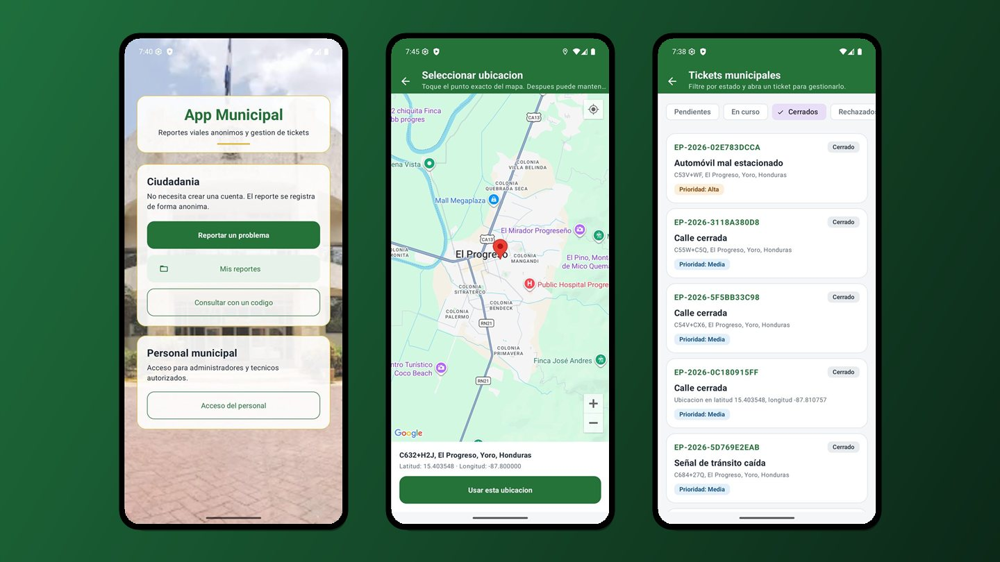

10 capturasApp Municipal de Reportes Viales
Aplicación Android para que los ciudadanos reporten problemas viales de forma anónima, con ubicación en Google Maps y fotografía. Cada reporte se convierte en un ticket: el administrador lo aprueba y lo asigna a un técnico, que lo cierra con foto y comentario finales. El ciudadano da seguimiento con un código.
Kotlin
Android
Spring Boot
API REST
MySQL